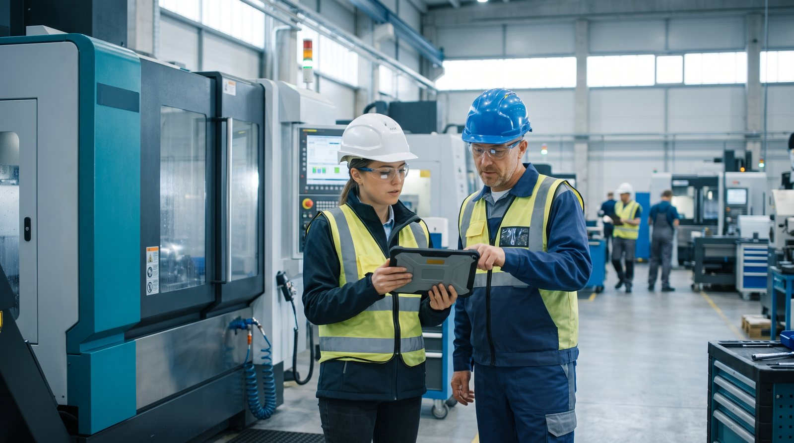
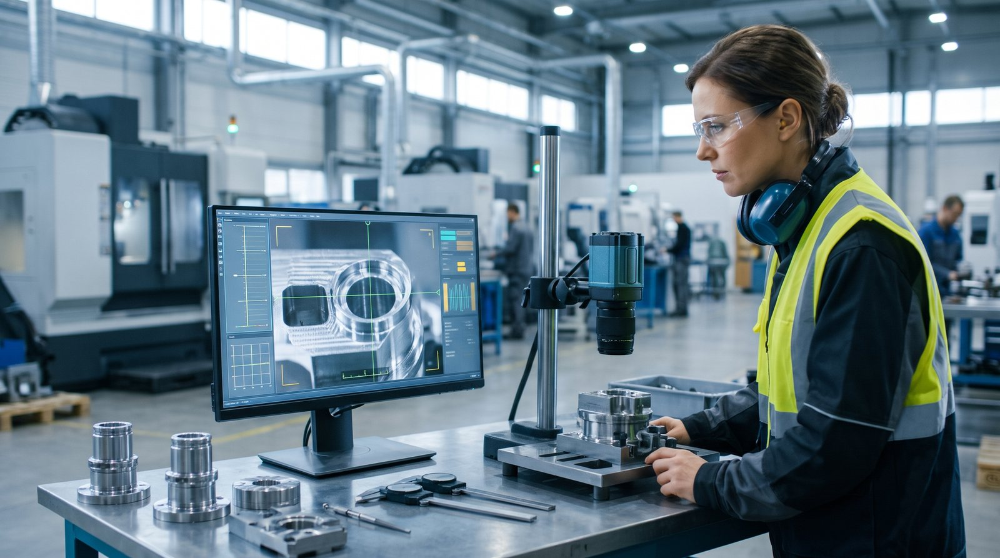

+30 yrs
of accumulated industrial & executive expertise from shop floor to boardroom
“Shop-floor data from the physical world to the logical world. Without reliable data, broad Artificial Intelligence deployment cannot succeed. SmartInovaT solves both ends: we connect what generates the data and build what transforms it into decisions.”
A next-generation engineering firm built upon over 30 years of real-world industrial expertise: the executive track record of assembling German machinery, retrofitting CNC machining centers, and building manufacturing plants from civil foundations to ERP — now applied to architecting, coding, and operating modern Artificial Intelligence platforms in production. Neither a consultancy that outsources execution, nor a software shop detached from heavy machinery.
of accumulated industrial & executive expertise from shop floor to boardroom
of Mercedes-Benz Trucks brake-drum machining line commissioned
textile manufacturing plant built end-to-end from foundation to ERP & ISO
spinning mill plant modernization and enterprise asset maintenance
continuously dedicated to field IoT, M2M, LPWAN & Industry 4.0
proprietary web applications in production across distinct industries
Established in 2025 to bridge physical operations with AI-driven decisions, SmartInovaT carries over three decades of verified field engineering leadership (1994–present) — spanning industrial pneumatics, German molding lines, and CNC retrofitting, an online factory built as early as 2000 at the ACATECH “Visibility” maturity stage, corporate innovation hubs, and full-stack AI software in production.
Industry 4.0 maturity diagnostics via the German ACATECH Maturity Index applied in live operations — translated into ROI-sequenced investment roadmaps rather than theoretical slide decks.
A rare capability in AI advisory: continuous innovation structured under ISO 56002 paired with auditable, responsible AI governance under ISO 42001.
Nine live web applications designed, coded, and operated in-house across unrelated domains — proving end-to-end mastery of cloud architecture, federated security, data, and generative AI.
Proven leadership across 850 t/month and 1,500 t/month plants, ERP rollouts, ISO 9001/14000, foreign trade with Germany, and 100% of machining for a Mercedes-Benz Trucks line.
Development of industrial automation solutions integrating Spirax Sarco, Rexroth (Pneumatics Division), ASCOVAL, Ashcroft, Compair, and Domnick Hunter, alongside technical plant training.
Greenfield construction of an 850 t/month knitting and finishing facility: civil, mechanical, electrical, and IT works, machinery selection, full-chain production integration, ERP rollout, and ISO 9001 & 14000 certifications.
Plant modernization and industrial upgrades across a 1,500 t/month spinning operation, ISO 9002 and 14000 quality compliance, and enterprise asset & maintenance governance.
International engineering trade, import/export operations, industrial business plans, and direct bilateral commerce with Germany, plus executive leadership of industrial export programs with SEBRAE.
Cross-functional coordination across heavy assembly, production, and maintenance for a German KÜNKEL WAGNER molding line, including technical translation of manuals, alarms, HMIs, and crew training.
Commissioning of 100% of the brake-drum machining line for Mercedes-Benz Brazil / Trucks, brake disc/drum machining, and comprehensive retrofitting of CNC machining centers and lathes.
Nearly eleven years dedicated to real-time wireless machine monitoring, remote-assistance M2M, industrial IoT, LPWAN networks, vision systems, renewable energy, lean manufacturing, and digital maturity diagnostics.
Executive CTO and Head of Innovation leading ISO 56002 governance, corporate innovation hubs (i-hub), field deployment of the ACATECH Maturity Index, and applied systems R&D at UNIFOR.
Real-time physical-to-digital data acquisition, engineering and operation of 9 proprietary AI web applications, Industry 4.0 transformation, business modeling, and ISO 56002 & ISO 42001 governance.
None of the nine platforms below is resold or white-labeled third-party software. Every system was architected and coded in-house by SmartInovaT across vastly different sectors — from AI process twins and gamified corporate training to digital-avatar video studios, real-time quantitative engines, Keycloak federated portals, and high-density vector score rendering. Launch interactive demos directly here or open local mockups in a new tab.
The costliest mistake in manufacturing is buying isolated sensors, dashboards, or AI licenses without knowing where operational data dies today. We apply the ACATECH Industrie 4.0 Maturity Index on the ground to turn technical maturity into an ROI-sequenced investment plan.
While traditional integrators stop at electrical PLC signals and digital consultancies wait for clean spreadsheets, SmartInovaT engineers both the physical machine bridge and the AI layer that turns telemetry into operational predictability.

Production data must never die inside machine controllers or rely on end-of-shift paper logs. Backed by nearly 11 years of wireless machine monitoring and hands-on CNC machining center retrofitting, we connect new and legacy shop floors directly to cloud pipelines and your ERP.

Once reliable data flows, we deploy AI engineering capabilities targeting measurable losses: automated optical quality inspection where human visual fatigue drives scrap, predictive models over historical telemetry to anticipate unplanned stops, and intelligent agents for repetitive workflows.
You don’t need to pick a protocol or AI acronym upfront — simply identify where your operation loses uptime, margin, or control today. Select the scenario closest to yours to inspect the technical route and live portfolio proof.
Transparent blueprint across all 6 technology layers operated by SmartInovaT — bridging shop-floor sensors and CNC retrofitting with React/Next.js, Keycloak federated identity, isolated containers, and international ISO standards.
Technology without governance creates reliance on isolated “hero” individuals or exposes the company to shadow-AI risk. ISO 56002 provides the guidance for an innovation management system; ISO/IEC 42001 sets the requirements for an Artificial Intelligence management system — the basis for governing and using AI responsibly. With both as reference, we institutionalize innovation and AI traceability while offering 5 clear engagement formats — from standalone assessments to custom software.
Select your primary priority and briefly describe your operational context below for direct routing to SmartInovaT’s engineering leadership.
Send your operational or strategic challenge directly to SmartInovaT’s technical leadership.
How we structure maturity diagnostics, legacy shop-floor connectivity, ISO AI governance, and custom software delivery.